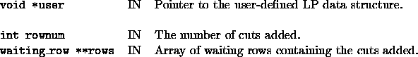
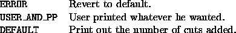

Back to SYMPHONY Home Page
Back to SYMPHONY Home Page
Next: user_purge_waiting_rows
Up: User-written functions of the
Previous: user_generate_cuts_in_lp
int user_print_stat_on_cuts_added(void *user, int rownum, waiting_row **rows)
- Description:
-
The user can print out some information (if he wishes to) on the cuts that
will be added to the LP formulation. The default is to print out the number of
cuts added.
- Arguments:
-

- Return values:
-

- Wrapper invoked from:
- add_best_waiting_rows() after it has been decided how many cuts to
add and after the cuts have been selected from the local pool.
Ted Ralphs
Thu Jun 8 12:44:45 CDT 2000